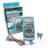

Things used in this project
Hardware components |
|

|
DFRobot UNIHIKER - IoT Python Programming Single Board Computer with Touchscreen |

|
Seeed Studio XIAO ESP32S3 Sense |

|
Blues Notecarrier A |

|
Blues Notecard (Cellular) |
| Espressif ESP32 | |
| Webcam, Logitech® HD Pro | |
| hoverboard motor | |
Software apps and online services |
|

|
Arduino IDE |

|
Microsoft VS Code |
| mind+ | |
| Blues Notehub.io | |
| OpenCV | |
| Mediapipe | |

|
Edge Impulse Studio |
| MQTT | |
| cvzone | |
| speech recognition | |
Hand tools and fabrication machines |
|

|
Soldering iron (generic) |
| Solder Wire, Lead Free | |
|  | Digilent Mastech MS8217 Autorange Digital Multimeter |
Story
STORY
1.Introduction
The primary purpose of this project is to develop an innovative assistive technology solution that enhances the quality of life for individuals with limited mobility. By leveraging facial expression recognition and voice command capabilities, we aim to create a more intuitive and accessible control interface for assistive devices such as wheelchairs and robotic arms.
Our motivation stems from the desire to empower individuals with disabilities by providing them with greater independence and control over their environment. We believe that by combining these advanced technologies, we can create a system that effectively addresses the challenges faced by people with limited mobility and offers a more human-centric approach to assistive technology.Individuals with limited mobility often encounter significant challenges in performing everyday tasks due to physical impairments.Our project addresses these challenges by providing an alternative control method.
2.System Overview
A Unihiker acts as the input for both face recognition and voice control. For face recognition, Face Mesh is used to detect the face and draw landmarks on it. The mouth landmarks are used to determine if the mouth is open or closed. If the mouth is open, commands are sent to the ESP32 Wroom, which controls the motor controller to move or not move. If the head moves left or right, commands are sent to another ESP32 to control the motor.
The system also has a provision for voice commands. This is useful in case the user is wearing a mask, making it difficult for the system to detect the face. The user can say words like "move forward, " "stop, " "left, " or "right" to send commands to the ESP32 Wroom and control the motors.
Additionally, an ESP32 Sense Xiao is used for object detection. This ensures safety by detecting obstacles in front of the system and sending commands to the ESP32 for control.
Finally, Notecarrier and Notecard are added to the system to utilize GPS and track the location of the system for safety purposes.
3.Facial Expression Recognition and Voice Commands
For face recognition and voice control, we are using a UNIHIKER . This is a cutting-edge single-board computer designed to revolutionize your computing experience. Packed with a 2.8-inch touchscreen, Wi-Fi, Bluetooth, and an array of sensors including light, accelerometer, gyroscope, and microphone, UNIHIKER is your gateway to a world of possibilities. With its integrated co-processor, this versatile device seamlessly communicates with a wide range of analog, digital, I2C, UART, and SPI sensors and actuators.
The script below creates an interactive system where facial expressions and voice commands are detected in real-time. The detected states are published to an MQTT broker, making it possible to control external devices like an ESP32 based on user input. The combination of OpenCV, MediaPipe, and speech recognition allows for a robust and interactive system that can be integrated into various IoT application.
Note: Ensure that you install the following libraries on your Unihiker:
"""
This Python script combines facial recognition and voice command recognition with an MQTT client.
It allows real-time face tracking and voice command processing, where the results are published
to an MQTT broker. The script uses threading to run both face recognition and voice command
recognition simultaneously. The GUI interface enables starting or stopping these processes.
Main components:
1. **MQTT Client**: Connects to an MQTT broker and publishes face and voice recognition results.
2. **Face Recognition**: Uses MediaPipe's face mesh model to track facial landmarks. Detects mouth
status (open/closed) and gaze direction (left/right/center).
3. **Voice Command Recognition**: Captures voice commands via a microphone and recognizes commands
such as "move forward", "move left", "move right", and "stop".
4. **GUI Interface**: Provides buttons to start and stop voice and face recognition processes.
Prerequisites:
- Install the required libraries: paho-mqtt, cvzone, opencv-python, mediapipe, speechrecognition, unihiker.
Usage:
- Press "START VOICE COM" to start voice command recognition.
- Press "START FACE RECOG" to start face recognition.
- The system will display detected statuses on the screen and publish corresponding messages to the MQTT broker.
"""
import paho.mqtt.client as mqtt
from unihiker import GUI
import time
import cvzone
import cv2 as cv
import threading
import mediapipe as mp
import speech_recognition as sr
# Initialize the GUI interface for Unihiker
gui = GUI()
# MQTT settings
mqtt_broker = "broker.hivemq.com" # Replace with your MQTT broker address
mqtt_port = 1883
mqtt_topic = "esp32/face_control"
# Initialize MQTT Client
client = mqtt.Client()
# Define callback for when the client connects to the MQTT broker
def on_connect(client, userdata, flags, rc):
print(f"Connected with result code {rc}")
client.subscribe(mqtt_topic) # Subscribe to the topic to listen for incoming messages
client.on_connect = on_connect
client.connect(mqtt_broker, mqtt_port, 60)
# Start the MQTT client loop in a separate thread
client.loop_start()
# Global flags to control the running state of face recognition and voice command recognition
face_recognition_running = False
voice_command_running = False
def faceRecognition():
"""
This function uses MediaPipe to perform real-time face recognition. It detects mouth
status (open/closed) and head orientation (looking left, right, or center), and publishes
these statuses to the MQTT broker.
"""
global face_recognition_running
# Initialize MediaPipe face mesh and drawing tools
mp_drawing = mp.solutions.drawing_utils
mp_drawing_styles = mp.solutions.drawing_styles
mp_face_mesh = mp.solutions.face_mesh
# Set drawing specifications for face landmarks
drawing_spec = mp_drawing.DrawingSpec(thickness=1, circle_radius=1)
# Open the camera for video capture
cap = cv.VideoCapture(0)
cap.set(cv.CAP_PROP_FRAME_WIDTH, 320)
cap.set(cv.CAP_PROP_FRAME_HEIGHT, 240)
cap.set(cv.CAP_PROP_BUFFERSIZE, 1)
# Create a full-screen window to display the face mesh
cv.namedWindow('MediaPipe Face Mesh', cv.WND_PROP_FULLSCREEN)
cv.setWindowProperty('MediaPipe Face Mesh', cv.WND_PROP_FULLSCREEN, cv.WINDOW_FULLSCREEN)
# Start face mesh detection
with mp_face_mesh.FaceMesh(max_num_faces=1, refine_landmarks=True,
min_detection_confidence=0.5, min_tracking_confidence=0.5) as face_mesh:
while face_recognition_running and cap.isOpened():
success, image = cap.read()
if not success:
print("Ignoring empty camera frame.")
continue
# Convert the image to RGB and process it with the face mesh
image.flags.writeable = False
image = cv.cvtColor(image, cv.COLOR_BGR2RGB)
results = face_mesh.process(image)
# Convert the image back to BGR for OpenCV processing
image.flags.writeable = True
image = cv.cvtColor(image, cv.COLOR_RGB2BGR)
if results.multi_face_landmarks:
for face_landmarks in results.multi_face_landmarks:
# Draw face mesh landmarks on the image
mp_drawing.draw_landmarks(
image=image,
landmark_list=face_landmarks,
connections=mp_face_mesh.FACEMESH_TESSELATION,
landmark_drawing_spec=None,
connection_drawing_spec=mp_drawing_styles.get_default_face_mesh_tesselation_style()
)
mp_drawing.draw_landmarks(
image=image,
landmark_list=face_landmarks,
connections=mp_face_mesh.FACEMESH_CONTOURS,
landmark_drawing_spec=None,
connection_drawing_spec=mp_drawing_styles.get_default_face_mesh_contours_style()
)
mp_drawing.draw_landmarks(
image=image,
landmark_list=face_landmarks,
connections=mp_face_mesh.FACEMESH_IRISES,
landmark_drawing_spec=None,
connection_drawing_spec=mp_drawing_styles.get_default_face_mesh_iris_connections_style()
)
# Calculate the distance between the upper and lower lips
upper_lip = face_landmarks.landmark[13]
lower_lip = face_landmarks.landmark[14]
lip_distance = ((upper_lip.x - lower_lip.x) ** 2 + (upper_lip.y - lower_lip.y) ** 2) ** 0.5
if lip_distance > 0.02:
cvzone.putTextRect(image, "Mouth Open", (10, 40), scale=1.5, thickness=2)
client.publish(mqtt_topic, "Mouth Open") # Publish to MQTT
else:
cvzone.putTextRect(image, "Mouth Closed", (10, 40), scale=1.5, thickness=2)
client.publish(mqtt_topic, "Mouth Closed") # Publish to MQTT
# Detect gaze direction based on cheek positions
left_cheek = face_landmarks.landmark[234]
right_cheek = face_landmarks.landmark[454]
if left_cheek.x < 0.3:
cvzone.putTextRect(image, "Looking Left", (10, 80), scale=1.5, thickness=2)
client.publish(mqtt_topic, "Looking Left") # Publish to MQTT
elif right_cheek.x > 0.7:
cvzone.putTextRect(image, "Looking Right", (10, 80), scale=1.5, thickness=2)
client.publish(mqtt_topic, "Looking Right") # Publish to MQTT
else:
cvzone.putTextRect(image, "Looking Center", (10, 80), scale=1.5, thickness=2)
client.publish(mqtt_topic, "Looking Center") # Publish to MQTT
# Rotate the image to display it correctly in portrait mode
image = cv.rotate(image, cv.ROTATE_90_CLOCKWISE)
cv.imshow('MediaPipe Face Mesh', image)
# Break the loop if the 'ESC' key is pressed
if cv.waitKey(5) & 0xFF == 27:
break
# Release the camera and close all OpenCV windows
cap.release()
cv.destroyAllWindows()
def voiceCommands():
"""
This function listens for voice commands using the microphone and recognizes specific
commands such as "move forward", "move left", "move right", and "stop". Recognized
commands are published to the MQTT broker.
"""
global voice_command_running
recognizer = sr.Recognizer()
mic = sr.Microphone()
# Adjust the recognizer for ambient noise
with mic as source:
recognizer.adjust_for_ambient_noise(source)
while voice_command_running:
with mic as source:
print("Listening...")
audio = recognizer.listen(source)
try:
command = recognizer.recognize_google(audio).lower()
print(f"You said: {command}")
# Publish recognized commands to MQTT
if "move forward" in command:
print("Moving Forward")
client.publish(mqtt_topic, "Move Forward")
elif "move left" in command:
print("Moving Left")
client.publish(mqtt_topic, "Move Left")
elif "move right" in command:
print("Moving Right")
client.publish(mqtt_topic, "Move Right")
elif "stop" in command:
print("Stopping")
client.publish(mqtt_topic, "Stop")
else:
print("Command not recognized")
except sr.UnknownValueError:
print("Sorry, I did not understand that.")
except sr.RequestError as e:
print(f"Sorry, there was an error with the speech recognition service: {e}")
def startFaceRecognition():
"""Starts the face recognition process in a separate thread."""
global face_recognition_running
face_recognition_running = True
threading.Thread(target=faceRecognition).start()
def stopFaceRecognition():
"""Stops the face recognition process."""
global face_recognition_running
face_recognition_running = False
def startVoiceCommands():
"""Starts the voice command recognition process in a separate thread."""
global voice_command_running
voice_command_running = True
threading.Thread(target=voiceCommands).start()
def stopVoiceCommands():
"""Stops the voice command recognition process."""
global voice_command_running
voice_command_running = False
# Add buttons to the GUI for starting voice and face recognition processes
gui.add_button(x=120, y=100, w=180, h=30, text="START VOICE COM", origin='center', onclick=startVoiceCommands)
gui.add_button(x=120, y=180, w=180, h=30, text="START FACE RECOG", origin='center', onclick=startFaceRecognition)
# Display a static text label on the GUI
info_text = gui.draw_text(x=120, y=50, text='MOMO', color="red", origin='bottom')
# Main loop to keep the script running and allow the GUI and threads to function
while True:
time.sleep(1)Wiring Diagram Of The Unihiker and Webcam
Results
4.Location Trucking and Motor
Espressif Systems ESP32-WROOM-32 MCU Modules are versatile and powerful Wi-Fi/Bluetooth/Bluetooth Low Energy (BLE) microcontroller units (MCUs) designed for a wide range of applications. These modules can be used for tasks as diverse as low-power sensor networks and demanding applications like voice encoding, music streaming, and MP3 decoding.
The ESP32-WROOM-32U module differs from the ESP32-WROOM-32D by incorporating a U.FL connector, which requires an external IPEX antenna to be connected.
Notecarriers are designed to facilitate the transition from prototyping to production for the Notecard . The Notecard is intended to be directly soldered onto a circuit board using an edge connector socket, alongside a customer's microcontroller unit (MCU), sensors, and controls. While this approach offers a highly modular configuration for the final product, it can make prototyping unnecessarily challenging.
Notecarriers provide breakout connections for the Notecard, as well as circuitry to ensure power management, protection, and signal amplification.
This code segment serves as an intermediary between the external control system (communicating through MQTT) from the Unihiker and the ESP32 Sense Xiao, and the hoverboard (communicating through a serial connection). It interprets object detection, facial expressions, and voice commands received as MQTT messages and translates them into control commands for the hoverboard.
Note: If you are unfamiliar with hoverboard modification, please refer to this resource to get started:
Disclaimer: Hoverboard modification can be risky and may void the warranty. It's crucial to prioritize safety throughout the entire process.Consult a qualified technician for complex modifications, especially those involving high voltages.Always exercise caution when working with a modified hoverboard.
The configuration

/*
* This Arduino code integrates various functionalities, including Wi-Fi, MQTT, serial communication,
* and motor control for a hoverboard. The program connects to a Wi-Fi network, subscribes to
* MQTT topics to receive face control and object detection commands, and controls a hoverboard
* based on those commands. The hoverboard's control data is received and sent via serial communication.
*
* Main Components:
* 1. **Wi-Fi and MQTT**: Connects to a Wi-Fi network and an MQTT broker to receive and send messages.
* 2. **Hoverboard Control**: Uses serial communication to send steering and speed commands to a hoverboard.
* 3. **Object Detection**: Stops the hoverboard if an object is detected and resumes control when the object is cleared.
* 4. **Face Control**: Controls the hoverboard's movement based on face recognition commands such as "Mouth Open", "Looking Left", etc.
* 5. **Notecard Communication**: Handles communication with a Notecard for cloud connectivity.
*
* Prerequisites:
* - Libraries: Notecard, Wire, WiFi, PubSubClient, SoftwareSerial
* - Replace placeholders for Wi-Fi credentials and MQTT topics with actual values.
*
* Usage:
* - Upon startup, the system connects to Wi-Fi and the MQTT broker.
* - Listens for face control commands to control the hoverboard.
* - Stops the hoverboard if an object is detected and resumes control when the object is cleared.
*/
// ########################## DEFINES ##########################
#define usbSerial Serial
#define txRxPinsSerial Serial1
#define NOTE_PRODUCT_UID "com.gmail.bobbanda441145:hello"
#define HOVER_SERIAL_BAUD 115200 // Baud rate for HoverSerial (used to communicate with the hoverboard)
#define SERIAL_BAUD 115200 // Baud rate for built-in Serial (used for the Serial Monitor)
#define START_FRAME 0xABCD // Start frame definition for reliable serial communication
#define TIME_SEND 100 // Sending time interval [ms]
#define SPEED_MAX_TEST 300 // Maximum speed for testing
#define SPEED_STEP 20 // Speed step for gradual acceleration
#define LED_BUILTIN 13 // Built-in LED pin
// WiFi settings
const char* ssid = "OPPO A37m"; // Replace with your WiFi SSID
const char* password = "sainebanda"; // Replace with your WiFi password
// MQTT settings
const char* mqtt_server = "broker.hivemq.com";
const char* mqtt_topic_face_control = "esp32/face_control";
const char* mqtt_topic_object_detected = "object_detected";
const int SDA_PIN = 5; // I2C SDA pin
const int SCL_PIN = 4; // I2C SCL pin
long previousMillis = 0; // Variable to store the last time an action was performed
long interval = 60000 * 10; // Interval between actions (in milliseconds)
// Initialize the WiFi and MQTT clients
WiFiClient espClient;
PubSubClient client(espClient);
Notecard notecard;
SoftwareSerial HoverSerial(2, 19); // RX, TX pins for SoftwareSerial communication
// Global variables
uint8_t idx = 0; // Index for new data pointer
uint16_t bufStartFrame; // Buffer Start Frame for incoming serial data
byte *p; // Pointer declaration for the new received data
byte incomingByte; // Incoming byte from serial
byte incomingBytePrev; // Previous incoming byte
bool objectDetected = false; // Flag to track if an object is detected
// Struct to define the serial command structure sent to the hoverboard
typedef struct {
uint16_t start;
int16_t steer;
int16_t speed;
uint16_t checksum;
} SerialCommand;
SerialCommand Command;
// Struct to define the feedback structure received from the hoverboard
typedef struct {
uint16_t start;
int16_t cmd1;
int16_t cmd2;
int16_t speedR_meas;
int16_t speedL_meas;
int16_t batVoltage;
int16_t boardTemp;
uint16_t cmdLed;
uint16_t checksum;
} SerialFeedback;
SerialFeedback Feedback;
SerialFeedback NewFeedback;
// Function to connect to Wi-Fi
void setup_wifi() {
delay(10);
Serial.println();
Serial.print("Connecting to ");
Serial.println(ssid);
WiFi.begin(ssid, password);
// Wait until Wi-Fi is connected
while (WiFi.status() != WL_CONNECTED) {
delay(500);
Serial.print(".");
}
Serial.println("");
Serial.println("WiFi connected");
Serial.println("IP address: ");
Serial.println(WiFi.localIP());
}
// MQTT callback function to handle incoming messages
void callback(char* topic, byte* payload, unsigned int length) {
Serial.print("Message arrived on topic: ");
Serial.print(topic);
Serial.print(". Message: ");
String message;
for (int i = 0; i < length; i++) {
message += (char)payload[i];
}
Serial.println(message);
// Handle object detection messages
if (String(topic) == mqtt_topic_object_detected) {
if (message == "object_detected") {
// Stop the hoverboard if an object is detected
Serial.println("Object detected, stopping wheels.");
Send(0, 0); // Send command to stop
objectDetected = true;
} else if (message == "object_cleared") {
// Resume control by face detection if the object is cleared
Serial.println("Object cleared, resuming control.");
objectDetected = false;
}
}
// Handle face control messages only if no object is detected
else if (String(topic) == mqtt_topic_face_control && !objectDetected) {
if (message == "Mouth Open") {
// Move the hoverboard forward
Serial.println("Moving Forward");
Send(0, SPEED_MAX_TEST); // Send command to move forward
} else if (message == "Mouth Closed") {
// Stop the hoverboard
Serial.println("Stopping");
Send(0, 0); // Send command to stop
} else if (message == "Looking Left") {
// Turn the hoverboard left
Serial.println("Turning Left");
Send(-SPEED_MAX_TEST, SPEED_STEP); // Send command to turn left
} else if (message == "Looking Right") {
// Turn the hoverboard right
Serial.println("Turning Right");
Send(SPEED_MAX_TEST, SPEED_STEP); // Send command to turn right
}
}
}
// Function to reconnect to MQTT broker if the connection is lost
void reconnect() {
while (!client.connected()) {
Serial.print("Attempting MQTT connection...");
if (client.connect("ESP32Client")) {
Serial.println("connected");
client.subscribe(mqtt_topic_face_control); // Subscribe to face control topic
client.subscribe(mqtt_topic_object_detected); // Subscribe to object detection topic
} else {
Serial.print("failed, rc=");
Serial.print(client.state());
Serial.println(" try again in 5 seconds");
delay(5000); // Wait 5 seconds before retrying
}
}
}
// Function to send steering and speed commands to the hoverboard
void Send(int16_t uSteer, int16_t uSpeed) {
Command.start = (uint16_t)START_FRAME; // Start frame
Command.steer = (int16_t)uSteer; // Steering command
Command.speed = (int16_t)uSpeed; // Speed command
Command.checksum = (uint16_t)(Command.start ^ Command.steer ^ Command.speed); // Calculate checksum
// Write the command to the hoverboard serial
HoverSerial.write((uint8_t *)&Command, sizeof(Command));
}
// Function to receive and process data from the hoverboard
void Receive() {
// Check for new data in the serial buffer
if (HoverSerial.available()) {
incomingByte = HoverSerial.read(); // Read incoming byte
bufStartFrame = ((uint16_t)(incomingByte) << 8) | incomingBytePrev; // Construct the start frame
} else {
return;
}
#ifdef DEBUG_RX
Serial.print(incomingByte);
return;
#endif
// Process the received data if the start frame is detected
if (bufStartFrame == START_FRAME) {
p = (byte *)&NewFeedback;
*p++ = incomingBytePrev;
*p++ = incomingByte;
idx = 2;
} else if (idx >= 2 && idx < sizeof(SerialFeedback)) {
*p++ = incomingByte;
idx++;
}
// Verify the checksum and update the feedback if valid
if (idx == sizeof(SerialFeedback)) {
uint16_t checksum;
checksum = (uint16_t)(NewFeedback.start ^ NewFeedback.cmd1 ^ NewFeedback.cmd2 ^ NewFeedback.speedR_meas ^ NewFeedback.speedL_meas
^ NewFeedback.batVoltage ^ NewFeedback.boardTemp ^ NewFeedback.cmdLed);
if (NewFeedback.start == START_FRAME && checksum == NewFeedback.checksum) {
memcpy(&Feedback, &NewFeedback, sizeof(SerialFeedback)); // Copy the valid feedback data
} else {
Serial.println("Non-valid data skipped");
}
idx = 0; // Reset index
}
// Update the previous byte for the next cycle
incomingBytePrev = incomingByte;
}
// Setup function that runs once at the beginning
void setup() {
Serial.begin(SERIAL_BAUD); // Initialize built-in serial communication
HoverSerial.begin(HOVER_SERIAL_BAUD); // Initialize hoverboard serial communication
pinMode(LED_BUILTIN, OUTPUT); // Set the built-in LED pin as output
digitalWrite(LED_BUILTIN, LOW); // Turn off the built-in LED
// Initialize the Notecard
Wire.begin(SDA_PIN, SCL_PIN);
notecard.begin(txRxPinsSerial);
notecard.setDebugOutputStream(usbSerial);
// Connect to Wi-Fi
setup_wifi();
// Setup MQTT server connection
client.setServer(mqtt_server, 1883);
client.setCallback(callback);
}
// Loop function that runs continuously after setup
void loop() {
if (!client.connected()) {
reconnect(); // Reconnect to MQTT broker if disconnected
}
client.loop(); // Process MQTT messages
// Handle hoverboard communication
Receive();
delay(10); // Short delay to allow loop processing
}Wiring Diagram for esp32 Wroom and Notecarrier
I intended to include a video demonstrating how these configurations function, but due to a 48-hour power outage, I couldn't record it.
5.The Object Detection
For object detection, we are using the ESP32-S3 Xiao Sense . The Seeed Studio XIAO ESP32-S3 utilizes a dual-core ESP32-S3 chip, supporting both Wi-Fi and Bluetooth Low Energy (BLE) wireless connectivity, enabling battery charging. It features a built-in camera sensor and digital microphone. Additionally, it offers 8MB of PSRAM, 8MB of FLASH, and an external SD card slot. All these features make it well-suited for embedded machine learning applications, such as intelligent voice and vision AI.
The provided code demonstrates how to utilize Edge Impulse for object detection on the ESP32-S3 Xiao Sense. It begins by initializing WiFi, MQTT, the camera, and waiting before starting the inference process. In the main loop, the code manages the MQTT connection, captures an image, prepares the data for inference, runs the classifier, and processes the object detection results. If an object is detected with a confidence level above a defined threshold, an MQTT message is published. This code showcases the integration of Edge Impulse models for real-time object detection on a microcontroller board.
/* Edge Impulse Arduino examples
* Copyright (c) 2022 EdgeImpulse Inc.
*
* Permission is hereby granted, free of charge, to any person obtaining a copy
* of this software and associated documentation files (the "Software"), to deal
* in the Software without restriction, including without limitation the rights
* to use, copy, modify, merge, publish, distribute, sublicense, and/or sell
* copies of the Software, and to permit persons to whom the Software is
* furnished to do so, subject to the following conditions:
*
* The above copyright notice and this permission notice shall be included in
* all copies or substantial portions of the Software.
*
* THE SOFTWARE IS PROVIDED "AS IS", WITHOUT WARRANTY OF ANY KIND, EXPRESS OR
* IMPLIED, INCLUDING BUT NOT LIMITED TO THE WARRANTIES OF MERCHANTABILITY,
* FITNESS FOR A PARTICULAR PURPOSE AND NONINFRINGEMENT. IN NO EVENT SHALL THE
* AUTHORS OR COPYRIGHT HOLDERS BE LIABLE FOR ANY CLAIM, DAMAGES OR OTHER
* LIABILITY, WHETHER IN AN ACTION OF CONTRACT, TORT OR OTHERWISE, ARISING FROM,
* OUT OF OR IN CONNECTION WITH THE SOFTWARE OR THE USE OR OTHER DEALINGS IN THE
* SOFTWARE.
*/
// These sketches are tested with 2.0.4 ESP32 Arduino Core
// https://github.com/espressif/arduino-esp32/releases/tag/2.0.4
/* Includes ---------------------------------------------------------------- */
#include <XIAO-ESP32S3-Sense-Object_Detection_inferencing.h>
#include "edge-impulse-sdk/dsp/image/image.hpp"
#include "esp_camera.h"
#include <WiFi.h>
#include <PubSubClient.h>
// WiFi credentials
const char* ssid = "OPPO A37m";
const char* password = "sainebanda";
// MQTT broker credentials
const char* mqtt_server = "broker.hivemq.com"; // Example broker
const char* mqtt_topic = "wheel/control";
// Initialize WiFi and MQTT clients
WiFiClient espClient;
PubSubClient client(espClient);
#define CAMERA_MODEL_ESP_EYE // Has PSRAM
//#define CAMERA_MODEL_AI_THINKER // Has PSRAM
#if defined(CAMERA_MODEL_ESP_EYE)
#define PWDN_GPIO_NUM -1
#define RESET_GPIO_NUM -1
#define XCLK_GPIO_NUM 10
#define SIOD_GPIO_NUM 40
#define SIOC_GPIO_NUM 39
#define Y9_GPIO_NUM 48
#define Y8_GPIO_NUM 11
#define Y7_GPIO_NUM 12
#define Y6_GPIO_NUM 14
#define Y5_GPIO_NUM 16
#define Y4_GPIO_NUM 18
#define Y3_GPIO_NUM 17
#define Y2_GPIO_NUM 15
#define VSYNC_GPIO_NUM 38
#define HREF_GPIO_NUM 47
#define PCLK_GPIO_NUM 13
#else
#error "Camera model not selected"
#endif
/* Constant defines -------------------------------------------------------- */
#define EI_CAMERA_RAW_FRAME_BUFFER_COLS 320
#define EI_CAMERA_RAW_FRAME_BUFFER_ROWS 240
#define EI_CAMERA_FRAME_BYTE_SIZE 3
/* Private variables ------------------------------------------------------- */
static bool debug_nn = false; // Set this to true to see e.g. features generated from the raw signal
static bool is_initialised = false;
uint8_t *snapshot_buf; // Points to the output of the capture
static camera_config_t camera_config = {
.pin_pwdn = PWDN_GPIO_NUM,
.pin_reset = RESET_GPIO_NUM,
.pin_xclk = XCLK_GPIO_NUM,
.pin_sscb_sda = SIOD_GPIO_NUM,
.pin_sscb_scl = SIOC_GPIO_NUM,
.pin_d7 = Y9_GPIO_NUM,
.pin_d6 = Y8_GPIO_NUM,
.pin_d5 = Y7_GPIO_NUM,
.pin_d4 = Y6_GPIO_NUM,
.pin_d3 = Y5_GPIO_NUM,
.pin_d2 = Y4_GPIO_NUM,
.pin_d1 = Y3_GPIO_NUM,
.pin_d0 = Y2_GPIO_NUM,
.pin_vsync = VSYNC_GPIO_NUM,
.pin_href = HREF_GPIO_NUM,
.pin_pclk = PCLK_GPIO_NUM,
// XCLK 20MHz or 10MHz for OV2640 double FPS (Experimental)
.xclk_freq_hz = 20000000,
.ledc_timer = LEDC_TIMER_0,
.ledc_channel = LEDC_CHANNEL_0,
.pixel_format = PIXFORMAT_JPEG, // YUV422,GRAYSCALE,RGB565,JPEG
.frame_size = FRAMESIZE_QVGA, // QQVGA-UXGA Do not use sizes above QVGA when not JPEG
.jpeg_quality = 12, // 0-63 lower number means higher quality
.fb_count = 1, // If more than one, i2s runs in continuous mode. Use only with JPEG
.fb_location = CAMERA_FB_IN_PSRAM,
.grab_mode = CAMERA_GRAB_WHEN_EMPTY,
};
/* Function definitions ------------------------------------------------------- */
bool ei_camera_init(void);
void ei_camera_deinit(void);
bool ei_camera_capture(uint32_t img_width, uint32_t img_height, uint8_t *out_buf);
void setup_wifi();
void reconnect();
int ei_camera_get_data(size_t offset, size_t length, float *out_ptr); // Added this function
/**
* @brief Setup image sensor & start streaming
*
* @retval false if initialisation failed
*/
bool ei_camera_init(void) {
if (is_initialised) return true;
// Initialize the camera
if (esp_camera_init(&camera_config) != ESP_OK) {
ei_printf("Camera init failed\r\n");
return false;
}
is_initialised = true;
return true;
}
/**
* @brief Deinitialize the image sensor
*/
void ei_camera_deinit(void) {
if (!is_initialised) return;
esp_camera_deinit();
is_initialised = false;
}
/**
* @brief Capture an image using the camera
*
* @param[in] img_width Width of the image
* @param[in] img_height Height of the image
* @param[out] out_buf Pointer to buffer where image data will be stored
* @retval True on success, false on failure
*/
bool ei_camera_capture(uint32_t img_width, uint32_t img_height, uint8_t *out_buf) {
camera_fb_t *fb = esp_camera_fb_get();
if (!fb) {
ei_printf("Camera capture failed\r\n");
return false;
}
memcpy(out_buf, fb->buf, fb->len);
esp_camera_fb_return(fb);
return true;
}
/**
* @brief Setup WiFi connection
*/
void setup_wifi() {
delay(10);
// Connect to WiFi
Serial.println();
Serial.print("Connecting to ");
Serial.println(ssid);
WiFi.begin(ssid, password);
while (WiFi.status() != WL_CONNECTED) {
delay(500);
Serial.print(".");
}
Serial.println("");
Serial.println("WiFi connected");
Serial.println("IP address: ");
Serial.println(WiFi.localIP());
}
/**
* @brief Reconnect to MQTT broker
*/
void reconnect() {
// Loop until we're reconnected
while (!client.connected()) {
Serial.print("Attempting MQTT connection...");
// Attempt to connect
if (client.connect("ESP32Client")) {
Serial.println("connected");
// Once connected, publish an announcement...
client.publish("outTopic", "hello world");
// ... and resubscribe
client.subscribe("inTopic");
} else {
Serial.print("failed, rc=");
Serial.print(client.state());
Serial.println(" try again in 5 seconds");
// Wait 5 seconds before retrying
delay(5000);
}
}
}
/**
* @brief Retrieve camera data and populate the output buffer
*
* @param[in] offset Offset in the buffer to start reading
* @param[in] length Number of bytes to read
* @param[out] out_ptr Pointer to output buffer
* @retval 0 on success
*/
int ei_camera_get_data(size_t offset, size_t length, float *out_ptr) {
for (size_t i = 0; i < length; i++) {
out_ptr[i] = static_cast<float>(snapshot_buf[offset + i]) / 255.0f;
}
return 0;
}
/**
* @brief Arduino setup function
*/
void setup() {
Serial.begin(115200);
while (!Serial);
setup_wifi(); // Initialize WiFi
client.setServer(mqtt_server, 1883); // Initialize MQTT server
Serial.println("Edge Impulse Inferencing Demo");
if (ei_camera_init() == false) {
ei_printf("Failed to initialize Camera!\r\n");
} else {
ei_printf("Camera initialized\r\n");
}
ei_printf("\nStarting continuous inference in 2 seconds...\n");
ei_sleep(2000);
}
/**
* @brief Get data and run inferencing
*
* @param[in] debug Get debug info if true
*/
void loop() {
if (!client.connected()) {
reconnect(); // Reconnect to MQTT broker if connection is lost
}
client.loop();
if (ei_sleep(5) != EI_IMPULSE_OK) {
return;
}
snapshot_buf = (uint8_t*)malloc(EI_CAMERA_RAW_FRAME_BUFFER_COLS * EI_CAMERA_RAW_FRAME_BUFFER_ROWS * EI_CAMERA_FRAME_BYTE_SIZE);
if (snapshot_buf == nullptr) {
ei_printf("ERR: Failed to allocate snapshot buffer!\n");
return;
}
ei::signal_t signal;
signal.total_length = EI_CLASSIFIER_INPUT_WIDTH * EI_CLASSIFIER_INPUT_HEIGHT;
signal.get_data = &ei_camera_get_data;
if (ei_camera_capture((size_t)EI_CLASSIFIER_INPUT_WIDTH, (size_t)EI_CLASSIFIER_INPUT_HEIGHT, snapshot_buf) == false) {
ei_printf("Failed to capture image\r\n");
free(snapshot_buf);
return;
}
ei_impulse_result_t result = { 0 };
EI_IMPULSE_ERROR err = run_classifier(&signal, &result, debug_nn);
if (err != EI_IMPULSE_OK) {
ei_printf("ERR: Failed to run classifier (%d)\n", err);
return;
}
ei_printf("Predictions (DSP: %d ms., Classification: %d ms., Anomaly: %d ms.): \n",
result.timing.dsp, result.timing.classification, result.timing.anomaly);
#if EI_CLASSIFIER_OBJECT_DETECTION == 1
ei_printf("Object detection bounding boxes:\r\n");
for (uint32_t i = 0; i < result.bounding_boxes_count; i++) {
ei_impulse_result_bounding_box_t bb = result.bounding_boxes[i];
if (bb.value == 0) {
continue;
}
ei_printf(" %s (%f) [ x: %u, y: %u, width: %u, height: %u ]\r\n",
bb.label,
bb.value,
bb.x,
bb.y,
bb.width,
bb.height);
// Send MQTT message if object is detected
if (bb.value > 0.5) { // Adjust this threshold as needed
client.publish(mqtt_topic, "object_detected");
}
}
#else
ei_printf("Predictions:\r\n");
for (uint16_t i = 0; i < EI_CLASSIFIER_LABEL_COUNT; i++) {
ei_printf(" %s: ", ei_classifier_inferencing_categories[i]);
ei_printf("%.5f\r\n", result.classification[i].value);
}
#endif
free(snapshot_buf);
}I intended to include a video demonstrating how these configurations function, but due to a 48-hour power outage, I couldn't record it.
6.Wiring Diagram Of the whole system
WorkFlow
A Unihiker serves as the input for both face recognition and voice control.For face recognition, Face Mesh is used to detect the face and draw landmarks on it. The mouth landmarks are used to determine if the mouth is open or closed. If the mouth is open, the Unihiker sends commands to the ESP32 Wroom using MQTT. The ESP32 Wroom subscribes to this topic on the same network (WiFi) and executes corresponding commands to control the hoverboard motors (e.g., forward, stop, left, right).
The ESP32 Wroom also acts as the host controller for the Notecarrier and Notecard, which are used to track the system's location for safety purposes.
The system also incorporates voice commands. This is useful when the user is wearing a mask, making it difficult for the system to detect the face. The user can say words like "move forward," "stop," "left," or "right" to send commands to the ESP32 Wroom and control the motors.
Additionally, an ESP32 Sense Xiao is used for object detection. If an object is detected in front of the system, a topic is sent to an ESP32 Wroom over the WiFi network. The ESP32 Wroom then ensures that it ignores commands from the Unihiker and issues a command to stop the motors.
6.BOM
Devices
• UNIHIKER
• ESP32-Wroom
• Logitech C920 HD Pro Webcam,
• Esp32-sence Xiao
• Hoverboard
• Notecarrier -AE
• Notecard
Power
• 5 Volts power supply
• 42 Volt 13 Amp Lithium batteries
Wires
• Male to male jumpers
• Female to male jumpers
Tools
• Solder and iron
• Multimeter
• Wire strippers and cutters
• Crimp tools
• Glue gun
7.Future Works
The Dual Control Wheelchair project has significant potential for further development. By enhancing face recognition and voice control, expanding functionality, improving safety and security, and integrating with other technologies, the project can offer even more innovative solutions for individuals with mobility impairments. Future improvements might include advanced face mesh models, noise reduction techniques, multi-modal input, obstacle avoidance algorithms, autonomous navigation, remote control, emergency stop mechanisms, data privacy measures, system monitoring tools and IoT integration. These advancements could lead to a more intuitive, reliable, and versatile wheelchair that empowers users to navigate their environments with greater independence and confidence.